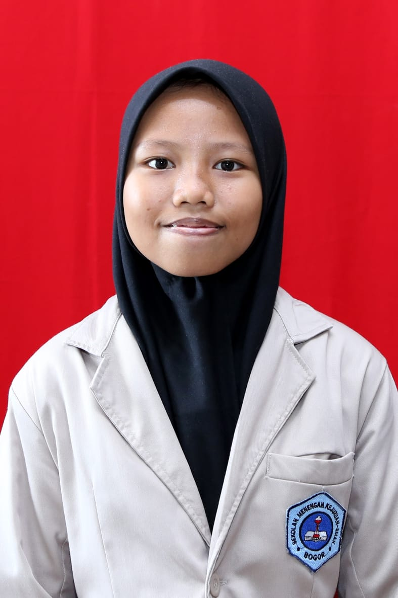

Pada awal Maret tahun 2020, kasus COVID-19 pertama di Indonesia diumumkan. COVID-19 adalah penyakit menular yang disebabkan oleh infeksi virus corona. Awalnya virus ini menyerang saluran pernafasan lalu berkembang menyerang organ lain. Karena dianggap berbahaya dan dapat menyebabkan kematian, diterapkan sistem baru yang dinamakan new normal. Untuk kepentingan diri kita sendiri, kita harus menerapkan protokol kesehatan sesuai dengan anjuran WHO. Oleh karena itu, kegiatan yang menyebabkan kerumunan seperti sekolah harus diberhentikan untuk sementara waktu, pembelajaran tetap dilakukan secara online dengan perantara aplikasi seperti zoom, google classroom, e-learning, dll.
Awalnya memang agak sulit bagi saya karena tidak mengenal aplikasi-aplikasi pembelajaran tersebut, namun karena adanya bantuan dari teman, saya bisa dengan cepat menyesuaikan diri. PJJ ini dimulai saat saya kelas 10 semester 2, saya yang sudah paham dasar-dasar pelajaran dari semester 1 merasa sistem online ini menguntungkan. Saya jadi memiliki lebih banyak waktu untuk diri saya sendiri, saya menemukan banyak hiburan dan ketertarikan baru pada banyak hal. Rasannya seperti istirahat sejenak dari keramaian dan interaksi sosial.
Namun, semakin lama saya semakin kesulitan karena saat saya tidak paham dengan suatu materi, saya tidak dapat menanyakannya langsung kepada teman. Lama-kemelamaan saya juga merasa kesepian dan rindu tertawa dan main bersama teman saya.
"Ternyata memang pembelajaran tatap muka lebih mudah dan menyenangkan," kata saya setiap malam.
Tetapi, jika statement di atas dibalas dengan "Yasudah, besok kamu offline, ya!" rasanya saya akan menangis. Tahun ajaran baru dimuali, saya semakin kesulitan karena bertemu dengan materi-materi baru. Walaupun orang-orang bilang seharusnya sudah bisa beradaptasi, guru baru menciptakan lingkungan baru yang harus saya kenali dari awal. Jadwal yang padat, banyaknya zoom meeting yang menguras kuota menjadi salah satu kendala. Terkadang pertemuan diadakan melewati batas yang ditentukan, tugas yang menumpuk, dan kondisi harus sudah siap ataupun paham apa yang akan dipelajari besok membuat saya kekurangan istirahat. Kendala jaringan internet juga sering sekali terjadi, sehingga merugikan siswa maupun guru.
Semuanya masih terasa sulit sampai sekarang, tapi dengan adanya dukungan-dukungan seperti bantuan kuota internet membuat saya kembali semangat. Dengan sebisa mungkin saya dan teman-teman saling membantu saat kesulitan, kita juga saling menghibur dan terkadang bermain game online bersama untuk melepaskan penat. Para guru juga siap membantu muridnya saat kesulitan, terkadang malu untuk bertanya, tetapi dari pengalaman saya sendiri lebih baik bertanya darpada kebingungan di jalan. Walaupun banyak rintangan, PJJ memberi saya pelajaran seperti pentingnya kebersamaan dan mengatur waktu dengan baik.
|  | Nama | Nur Sadrina Ghassani |
|---|---|---|
| Kelas | XI-4 | |
| NISN | 19.65.09317 | |
| Angkatan | 65 |